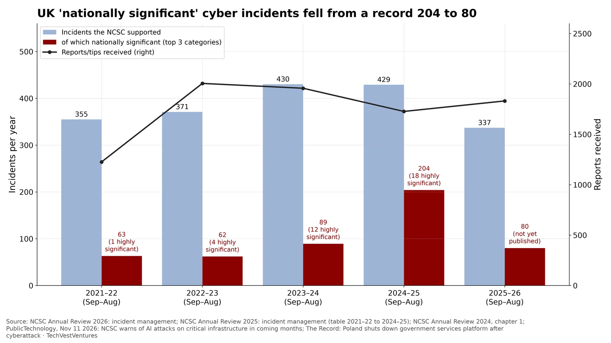

Q7. UK Incidents

Cyber incidents handled by the UK National Cyber Security Centre's Incident Management team each year (September–August), the number classed as 'nationally significant' (the top three of six government categories), and the reports received (black line). In its 2026 Annual Review the NCSC said it received 1,831 reports, supported 337 incidents and classed 80 as nationally significant, down from a record 204 in 2024–25, when 48% of all incidents reached that level. The 2025 review blamed that spike partly on mass exploitation of a few edge-device flaws (Ivanti, Fortinet) by a small number of actors. The fall is real in the NCSC's own count, but one year after a record is too short to call a trend.
- Highly significant (Category 2) incidents rose for three straight years: 1 (2021–22), 4, 12, 18 (2024–25). The 2026 review gives no Category 2 count.
- Through its Early Warning service the NCSC also notified 8,500 organisations of suspected compromises in 2025–26.
- The NCSC itself flagged that the 2022–23 jump in reports reflects a change in data collection and is not directly comparable.
- Counterpoint this week: the NCSC warned of AI-enabled attacks on critical infrastructure in the coming months, and Poland had to shut its ePUAP government-services platform after a cyberattack.
Note: Years run September to August. 'Nationally significant' = Categories 1–3 of the joint NCSC/law-enforcement model; the 2021–22 figure is 63 in the 2022 and 2025 reviews (62 in one 2024 table). Counts reflect incidents reported to or found by the NCSC, not all UK incidents.
Sources: NCSC Annual Review 2026: incident management NCSC Annual Review 2025: incident management (table 2021–22 to 2024–25) NCSC Annual Review 2024, chapter 1 PublicTechnology, Nov 11 2026: NCSC warns of AI attacks on critical infrastructure in coming months The Record: Poland shuts down government services platform after cyberattack